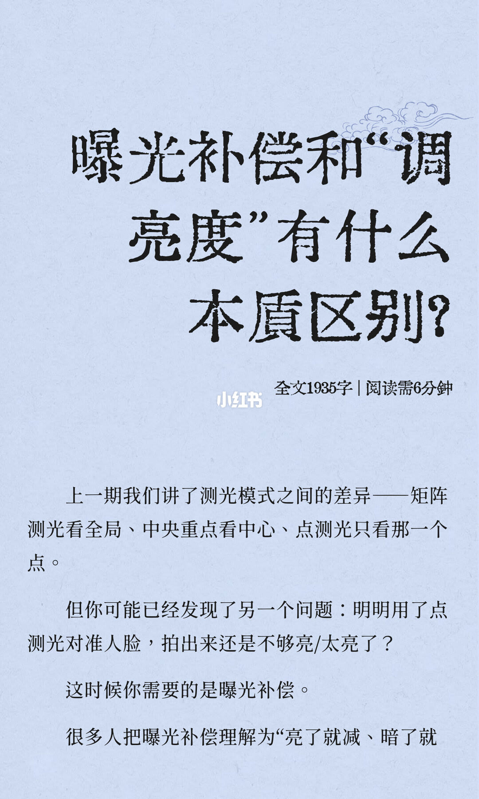
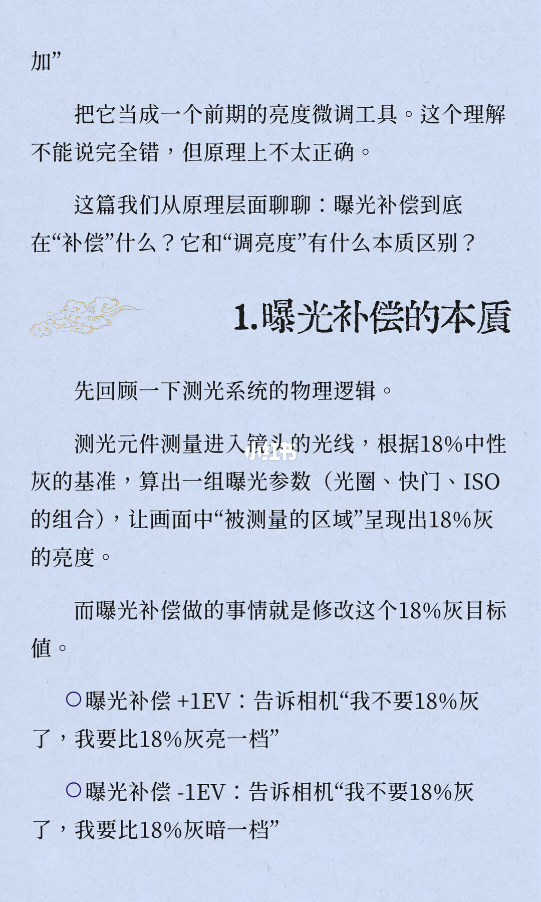
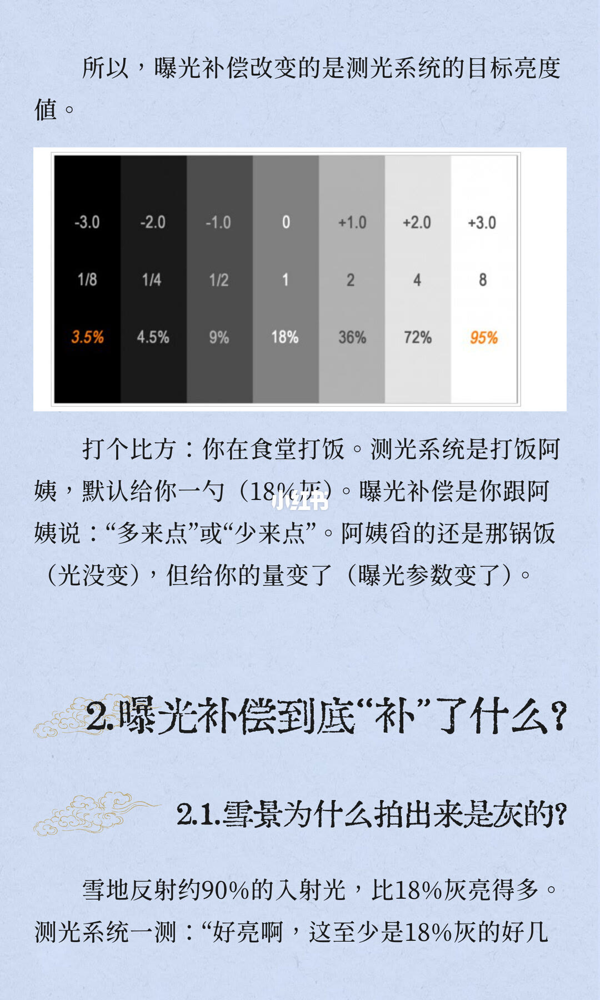
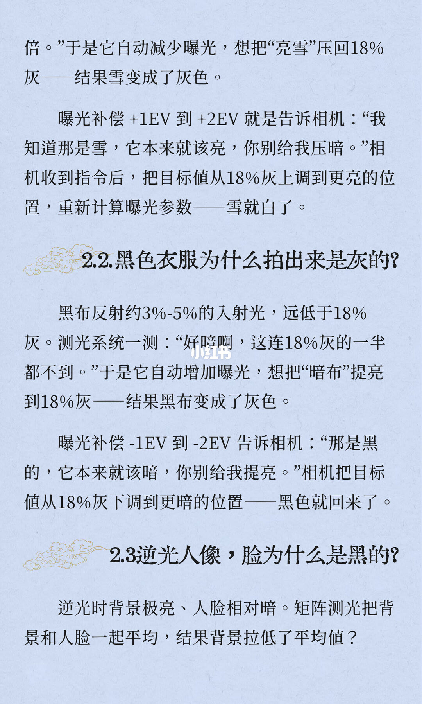
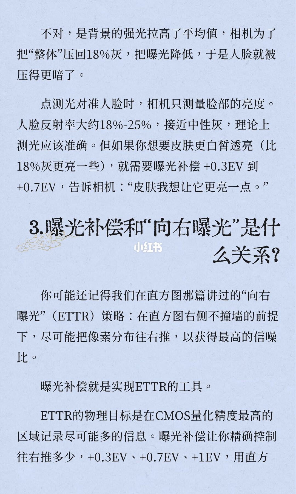
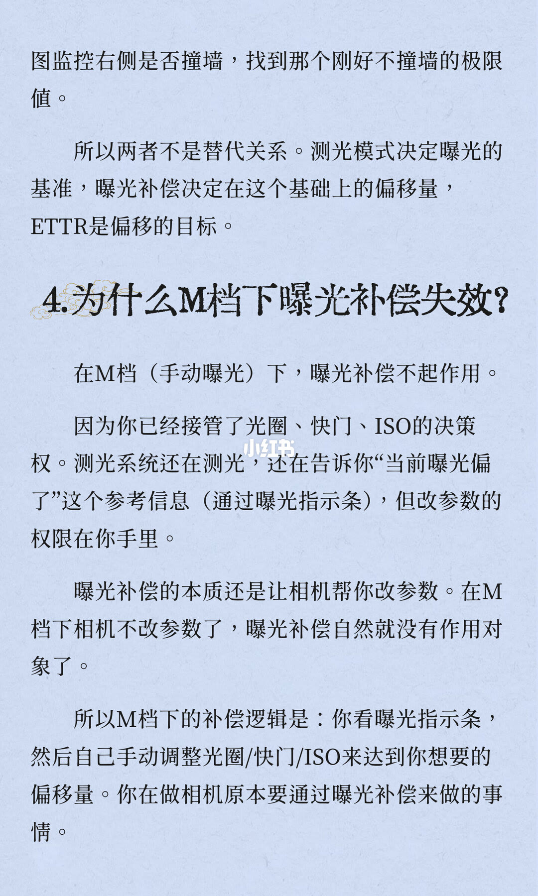
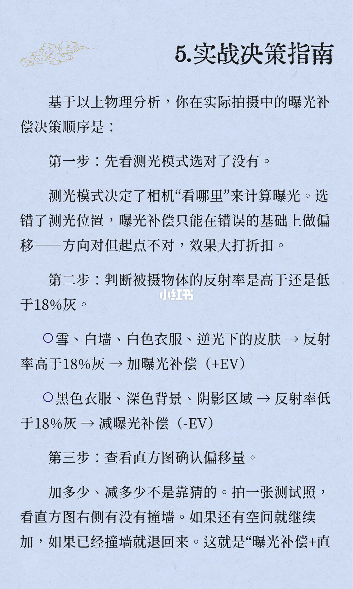
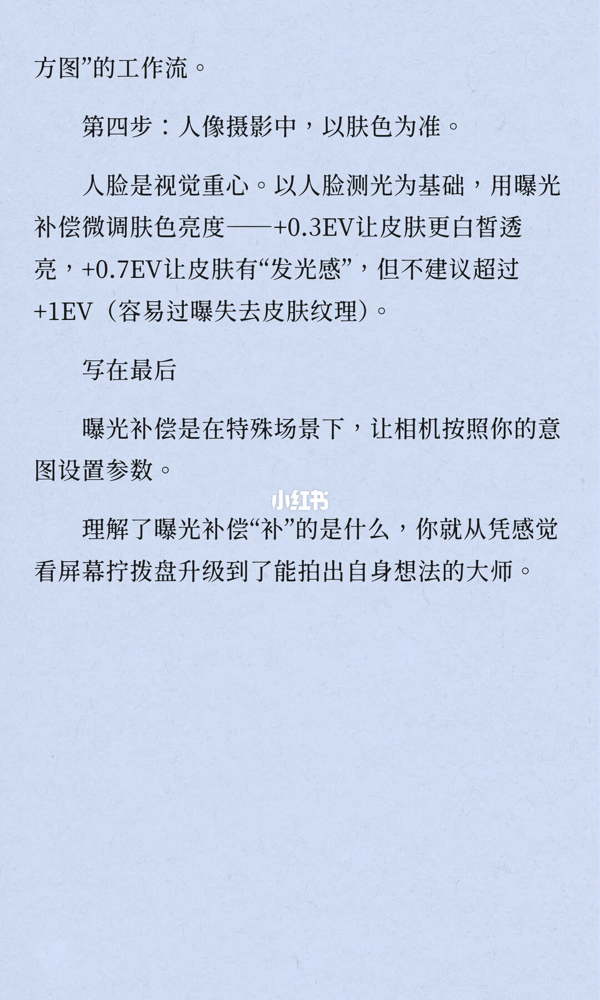

图文实录 · 小红书 · 徐贰懂
曝光补偿和“调亮度”有什么本质区别？
区别在测光目标，不在事后把画面拧亮拧暗。曝光补偿改的是相机要达成的 18% 灰，于是重算光圈、快门和 ISO。封面把常见理解收成「亮了就减、暗了就加」，并写成前期的亮度微调：方向能用，原理不对。
1/8
点测了人脸，还是不够亮或太亮
封面标题是「曝光补偿和“调亮度”有什么本质区别？」，旁边印着全文 1935 字、阅读需 6 分钟。上一期把测光分成三种：矩阵看全局，中央重点看中心，点测光只看那一个点。新问题是：点测光已经对准人脸，拍出来仍不够亮，或者太亮。这时候需要的是曝光补偿。页末一句还没写完：很多人把曝光补偿理解为「亮了就减、暗了就」。

2/8
补偿改的是 18% 灰目标
上页断句接上「加」。作者把它当成一个前期的亮度微调工具，并说这个理解不能说完全错，但原理上不太正确。这一篇要问的是：曝光补偿到底在补偿什么，它和调亮度有什么本质区别。测光元件测量进入镜头的光线，按 18% 中性灰算出一组光圈、快门、ISO，让被测量的区域呈现 18% 灰的亮度。曝光补偿做的事，就是修改这个 18% 灰目标值。图上两句：+1EV 是告诉相机不要 18% 灰了，要比 18% 灰亮一档；-1EV 是要比 18% 灰暗一档。

3/8
灰阶表、打饭，以及雪为什么变灰
所以，曝光补偿改变的是测光系统的目标亮度值。中间一条灰阶从左到右印着 -3.0、-2.0、-1.0、0、+1.0、+2.0、+3.0；下一行是 1/8、1/4、1/2、1、2、4、8；再下一行是 3.5%、4.5%、9%、18%、36%、72%、95%。0 档对准 18%。打饭的比方：测光系统是打饭阿姨，默认一勺（18% 灰）。曝光补偿是跟阿姨说多来点或少来点。舀的还是那锅饭，光没变；给你的量变了，曝光参数变了。第二节问补偿到底补了什么。2.1 问雪景为什么拍出来是灰的：雪地反射约 90% 的入射光，比 18% 灰亮得多。测光系统会觉得好亮，至少是 18% 灰的好几倍。这句话在页底断开。

4/8
雪加、黑减，逆光先抛出一个问句
上页接上「倍」。相机自动减少曝光，想把亮雪压回 18% 灰，雪就变成灰色。曝光补偿 +1EV 到 +2EV 是告诉相机：那是雪，本来就该亮，别压暗。目标值从 18% 灰上调到更亮的位置，重新计算曝光参数，雪就白了。2.2 问黑色衣服为什么拍出来是灰的。黑布反射约 3%–5% 的入射光，远低于 18% 灰。测光觉得连 18% 灰的一半都不到，就自动增加曝光，想把暗布提亮到 18% 灰，黑布变成灰色。曝光补偿 -1EV 到 -2EV 是告诉相机：那是黑的，本来就该暗，别提亮。目标值下调，黑色回来。2.3 问逆光人像的脸为什么是黑的：背景极亮，人脸相对暗，矩阵测光把背景和人脸一起平均。页末是一个问句：结果背景拉低了平均值？

5/8
逆光被改口，肤色和向右曝光接上
下一页立刻改口：不对，是背景的强光拉高了平均值。相机为了把整体压回 18% 灰，把曝光降低，人脸就被压得更暗。点测光对准人脸时，只测量脸部亮度。人脸反射率大约 18%–25%，接近中性灰，理论上测光应该准确。若想要皮肤更白皙透亮，也就是比 18% 灰更亮一些，需要曝光补偿 +0.3EV 到 +0.7EV。第三节问曝光补偿和向右曝光是什么关系。向右曝光（ETTR）是：直方图右侧不撞墙的前提下，尽可能把像素分布往右推，以获得最高的信噪比。曝光补偿就是实现 ETTR 的工具。物理目标写成：在 CMOS 量化精度最高的区域记录尽可能多的信息。往右推多少，页上点名 +0.3EV、+0.7EV、+1EV，并用直方图监控。句子在「用直方」处断开。

6/8
基准、偏移、目标；M 档补偿没有对象
上页接成「图」：监控右侧是否撞墙，找到刚好不撞墙的极限值。测光模式、曝光补偿和 ETTR 不是替代关系。测光模式决定曝光的基准，曝光补偿决定在这个基础上的偏移量，ETTR 是偏移的目标。第四节问为什么 M 档下曝光补偿失效。手动曝光下，曝光补偿不起作用，因为光圈、快门、ISO 的决策权已经在你手里。测光系统仍在测光，仍通过曝光指示条告诉你当前曝光偏了，但改参数的权限不在相机。补偿的本质是让相机帮你改参数；M 档相机不改参数，补偿就没有作用对象。M 档的做法是看曝光指示条，自己调光圈、快门或 ISO，达到想要的偏移量。你在做相机原本要通过曝光补偿来做的事。

7/8
先看测哪里，再看比 18% 灰高还是低
第五节是实战决策顺序。第一步先看测光模式选对了没有。测光模式决定相机看哪里来计算曝光。选错位置，补偿只能在错误的基础上做偏移：方向对，起点不对，效果大打折扣。第二步判断被摄物体的反射率高于还是低于 18% 灰。高于的一列是雪、白墙、白色衣服、逆光下的皮肤，动作是加曝光补偿（+EV）。低于的一列是黑色衣服、深色背景、阴影区域，动作是减曝光补偿（-EV）。这一页的加和减没有印出具体档数。第三步查看直方图确认偏移量。加多少、减多少不是靠猜的。拍一张测试照，看直方图右侧有没有撞墙：还有空间就继续加，已经撞墙就退回来。页底把这套流程叫做「曝光补偿+直」，下一页接上。

8/8
人像以肤色为准，不建议超过 +1EV
上页接成「方图」的工作流。第四步：人像摄影中，以肤色为准。人脸是视觉重心。以人脸测光为基础，用曝光补偿微调肤色亮度。+0.3EV 让皮肤更白皙透亮，+0.7EV 让皮肤有发光感，但不建议超过 +1EV，原因写的是容易过曝、失去皮肤纹理。写在最后两句：曝光补偿是在特殊场景下，让相机按照你的意图设置参数。理解了补偿补的是什么，就从凭感觉看屏幕拧拨盘，升级到能拍出自身想法。

收尾
改的是目标灰，不是屏幕上的亮度旋钮
结论：曝光补偿修改测光要达成的 18% 灰，相机重算光圈、快门、ISO。雪、白墙一类偏亮的物体，测光会减曝光，所以补偿往加的方向走；黑衣服一类偏暗的物体相反。看屏幕凭感觉拧拨盘，补的不是这个目标。
支撑页：第 2–3 页定义目标值，并印出 -3.0 到 +3.0 的档位、倍数和反射率。第 4–5 页给出雪 +1EV 到 +2EV、黑布 -1EV 到 -2EV、肤色 +0.3EV 到 +0.7EV，并把第 4 页「背景拉低平均值」改成强光拉高平均值。第 6 页把测光、补偿、ETTR 分成基准、偏移、目标，并说明 M 档补偿没有作用对象。第 7–8 页是四步：测光位置、相对 18% 灰、直方图、人像以肤色为准且不建议超过 +1EV。
边界：只采用图上印出的 EV，不把第 7 页的 +EV、-EV 补成具体档。反射率只印了雪地约 90%、黑布约 3%–5%、人脸约 18%–25%，以及灰阶表上的 3.5%、4.5%、9%、18%、36%、72%、95%。表两端不能按 18% 乘 1/8 或乘 8 回推。第 7 页把「逆光下的皮肤」和第 5 页的人脸反射率放在不同说法里，图上没有再统一。全文 1935 字、阅读 6 分钟是封面印字。